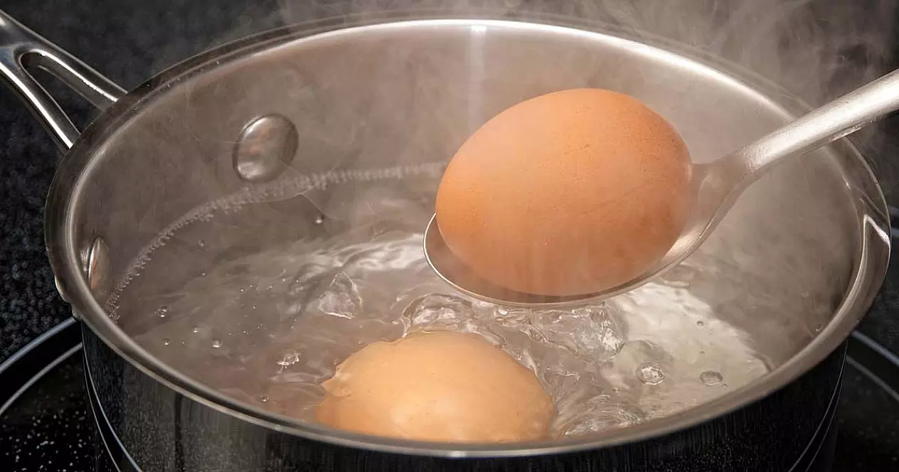
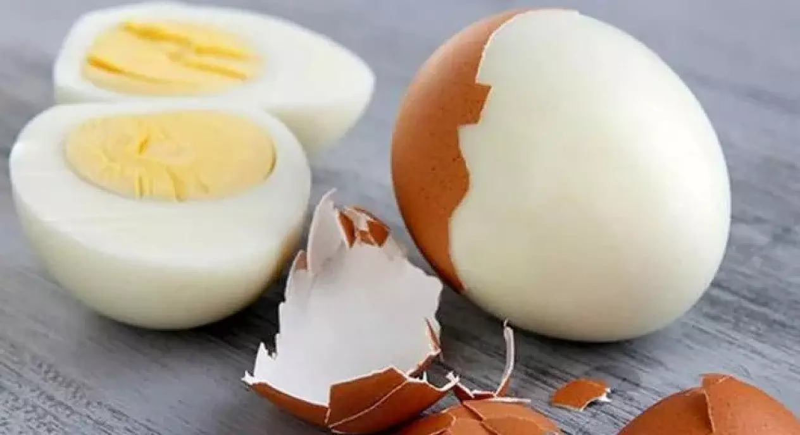
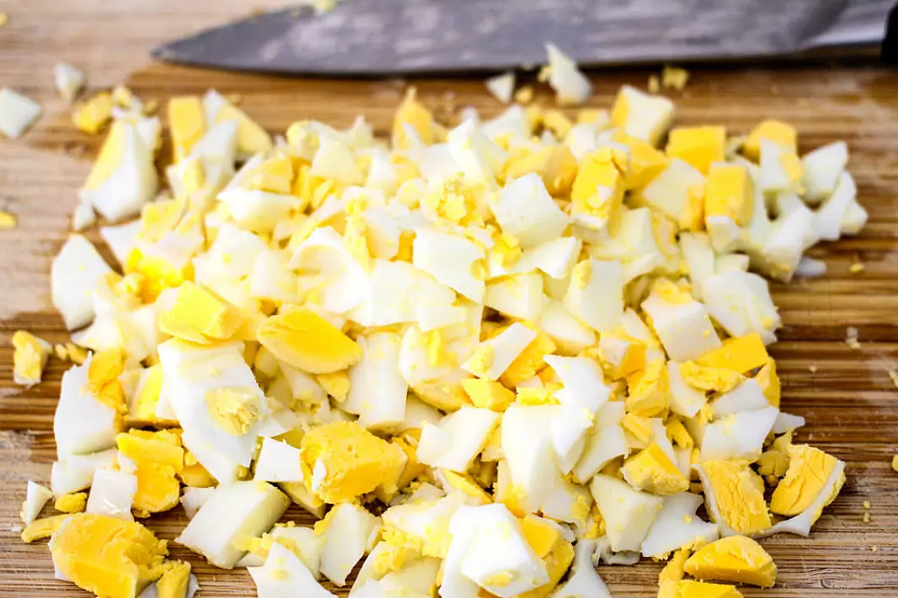
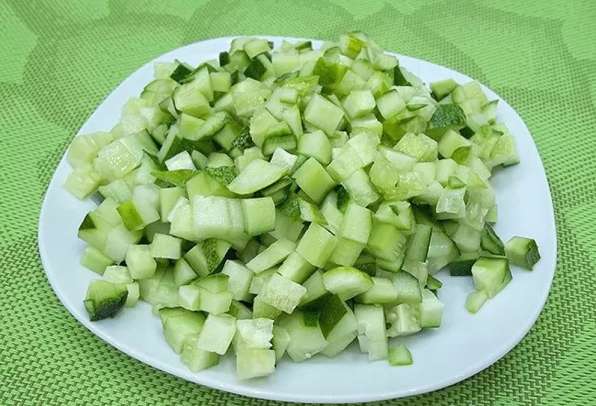
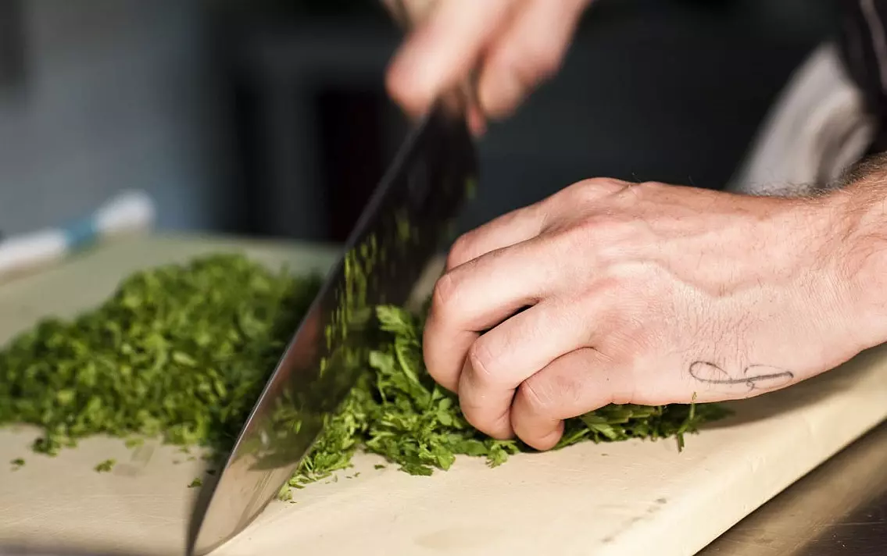
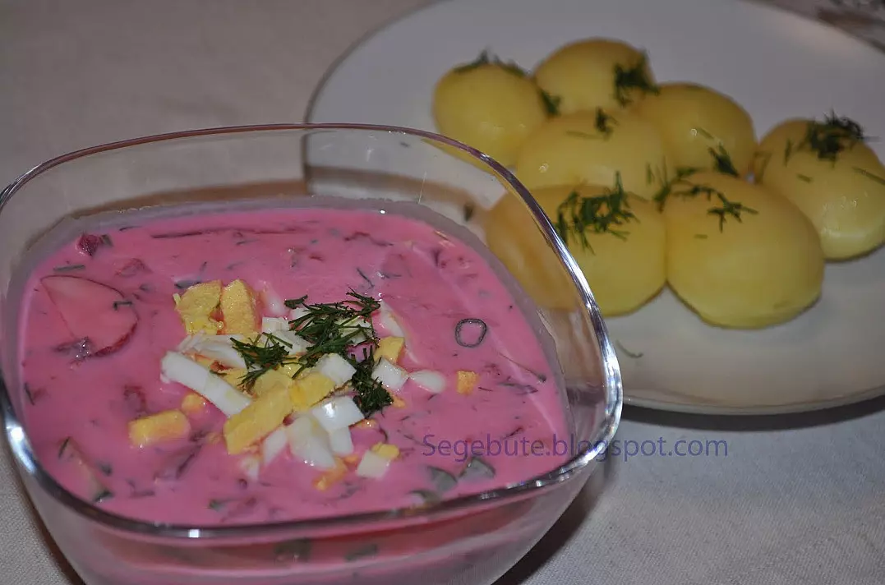

Šaltibarščiai
Reikės:
- 500 gramų burokėlių marinuotų obuolių sultyse,
- 3 kiaušinių,
- 200 gramų agurkų,
- 20 gramų krapų,
- 30 gramų svogūnų laiškų,
- 1 litro kefyro,
- žiupsnelio druskos.
- Pirmiausia kiaušinius kietai išverdame.

- Kiaušinius atvėsiname bei nulupame.

- Supjaustome norimo dydžio gabaliukais.

- Tuomet agurkus supjaustome mažais simetriškais gabaliukais.

- Susmulkiname krapus bei svogūnų laiškus.

- Tada nuo burokėlių nusunkiame skystį bei sukrečiame juos į didelį dubenį. Suberiame susmulkintus agurkus, žalumynus, supilame ant viršaus kefyrą. Jeigu Jūs mėgstate skystesnius šaltibarščius, galite truputį atskiesti pienu arba virintu vandeniu iki norimos konsistencijos. Pagal skonį pasūdome. Palaikome šaldytuve.
- Patiekiame atvėsintus su karštomis virtomis (arba apkeptomis) bulvėmis.

Skanaus!
Atgal
Dovydas Mackevičius 2c